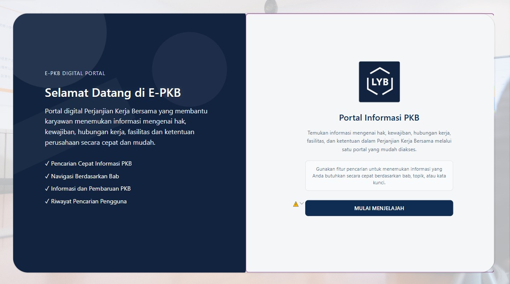
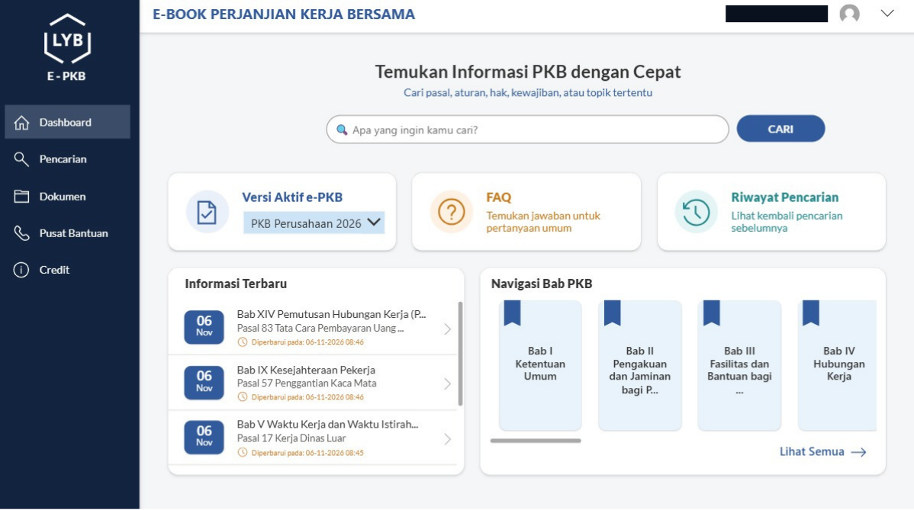
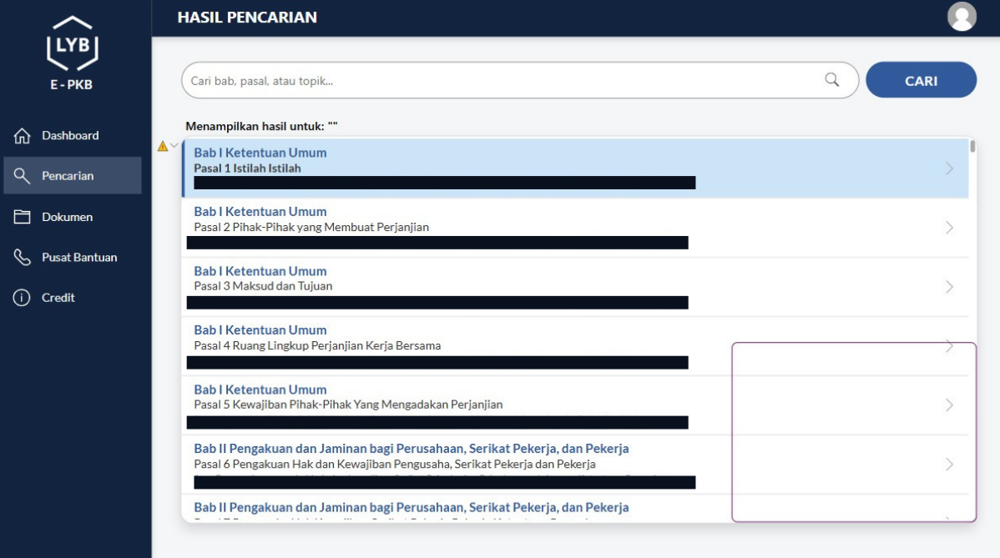
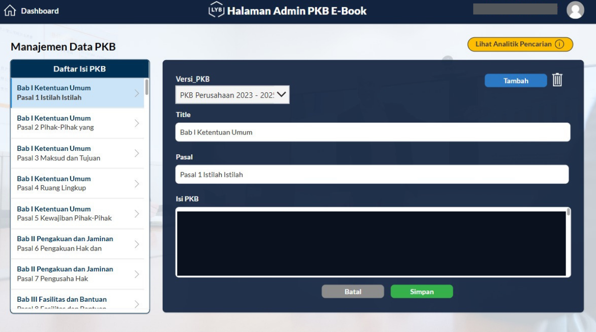
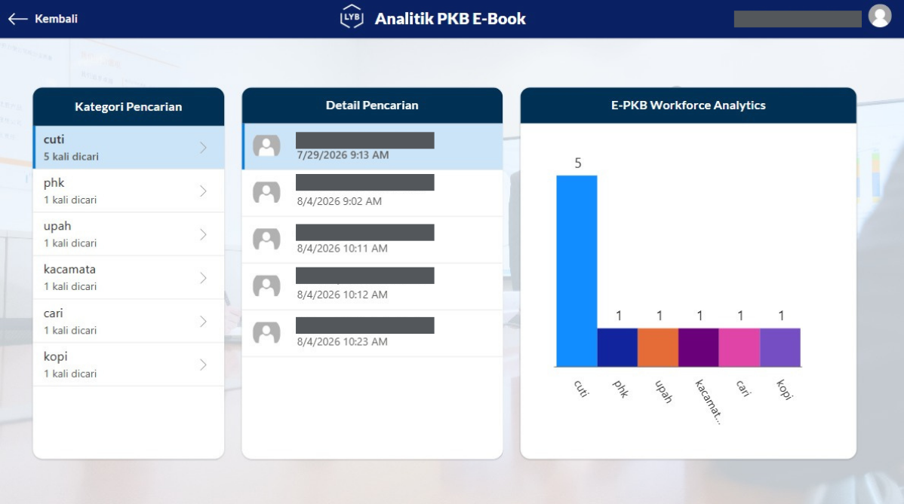
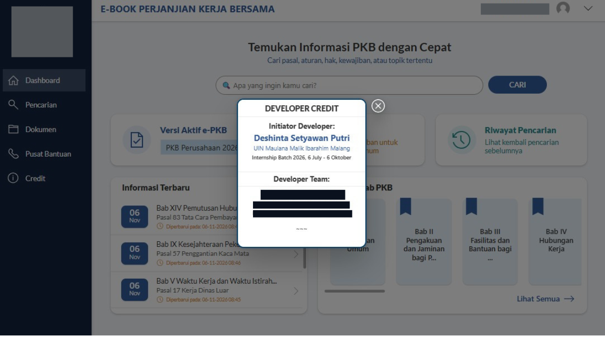

e-CBA – Digital HR Knowledge Base
Microsoft Power Platform
Power Apps
SharePoint
Power Automate
HRIS
Project Description
e-CBA is an enterprise-scale digital platform designed to centralize HR policies and organizational knowledge. The application enables employees to search for relevant HR information and access company-related application programs through a centralized information platform.
Screenshots






Key Features & Impact
- Centralized HR Knowledge Base: Consolidates company HR policies and organizational information into a centralized digital platform.
- Information Search & Retrieval: Facilitates employee access to relevant HR policies and information through a searchable platform.
- Integrated PGO Application Access: Simplifies access to relevant company HR application programs through a centralized information platform.
- Impact: Improved information accessibility and centralized HR knowledge management for employees across the organization.